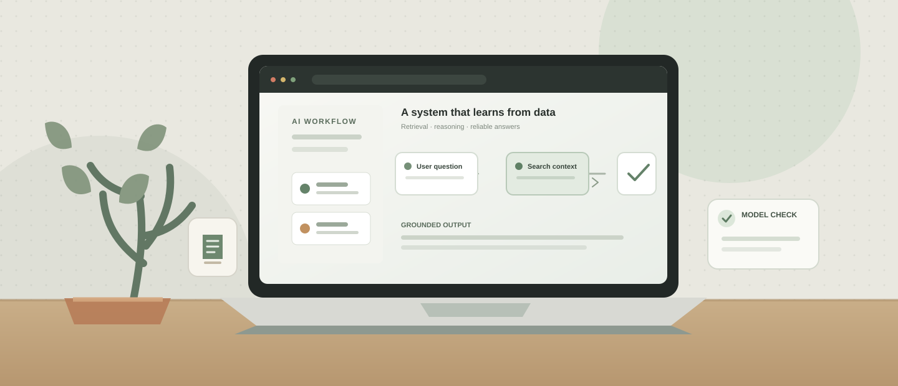

👋 Hi, I’m Jatin. Welcome to my portfolio!
PYTHON DEVELOPER GENERATIVE AI MACHINE LEARNING
JATIN
MINHAS
AI / ML Engineer · Building practical AI and data-driven applications.
MCA graduate with hands-on experience in Python, machine learning, FastAPI, Django, and Generative AI. I build useful applications and test them for accuracy, reliability, and real-world fit.
Click below to view the resume and verify the work.
Download Resume01 / ABOUT
Practical AI, built on solid foundations.
I’m an AI/ML engineer with an MCA and a BSc in Computer Science. My work spans machine learning, Generative AI, backend development, data analysis, and evaluating AI outputs against clear expectations.
- FocusRAG, LLM evaluation, prompt testing, and AI workflows
- ToolkitPython, FastAPI, Django, Scikit-learn, Pandas, and NumPy
- ExperienceAI/ML Intern at CS Infotech, Chandigarh
02 / EXPERIENCE
Work and learning, put into practice.
AI/ML internship experience alongside a strong academic foundation in computer science.
Jan 2026 – June 2026
AI/ML Intern
CS Infotech, Chandigarh
- Developed and tested AI-powered solutions for document understanding, recommendation workflows, and conversational interfaces.
- Wrote around 50 controlled scenarios for an AI workplace recommendation system and compared expected versus actual outputs.
- Evaluated a speaker-recommendation chatbot for hallucinations, unsupported claims, and multi-turn accuracy, preparing PASS / PARTIAL PASS / FAIL reports.
- Explored MES and manufacturing data for an ETL proof of concept and validated production and downtime data using Python.
- Worked on business requirements gathering and workflow analysis for enterprise AI assistant applications.
Aug 2024 – Jul 2026
Master of Computer Applications (MCA)
Himachal Pradesh Technical University, Hamirpur, HP
- Focused on software engineering, AI, machine learning, data analysis, and application development.
Aug 2020 – Jul 2023
Bachelor of Computer Science (BSc CS)
DAV College, Jalandhar, Punjab
- Built a foundation in programming, databases, data structures, and system design.
03 / PROJECTS
Selected projects.
AI, machine learning, and full-stack applications—from problem framing to implementation.
At CS Infotech
Personal projects
04 / SKILLS
A toolkit for building useful systems.
Technologies and methods across AI, data, backend development, and application delivery.
05 / NEXT CHAPTER
Let’s build something useful.
Open to opportunities in AI engineering, machine learning, and backend development.